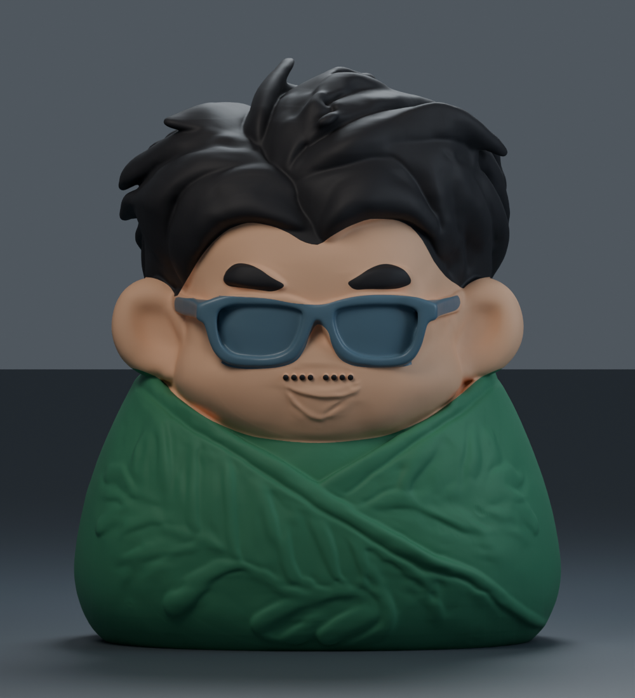
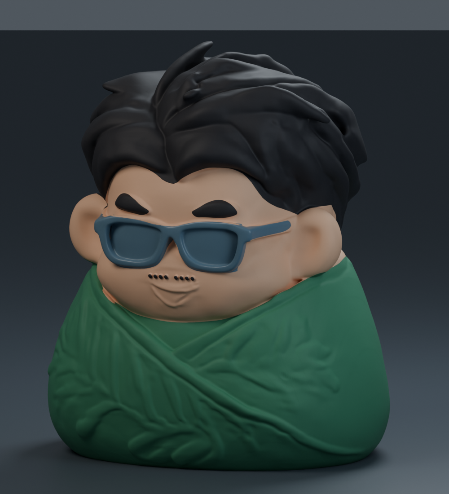
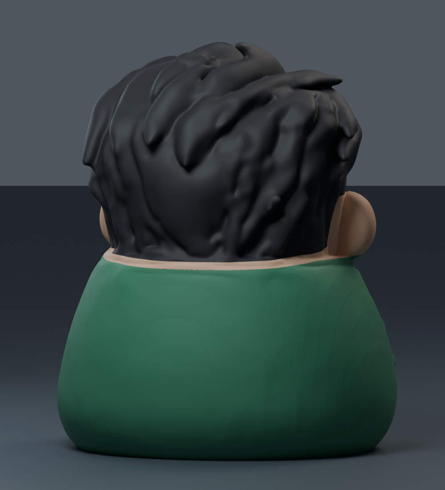

ZONGZI FIGURINE · 100 MM
把喜歡的顏色，配給這顆粽子。
保留原本的公仔外形，分成四個能獨立指定線材的區域。開啟 3MF 後，就能在 Bambu Studio 選自己的配色。

正面 · 範例配色，可在 Bambu Studio 更換
斜側面 · 實際 3D 零件渲染在 Bambu Studio 選顏色
- 開啟 3MF 為「專案」，進入「準備」畫面。
- 左側切換到「物件」，展開粽子公仔，會看到四個零件。
- 點各零件旁的耗材編號，選擇想使用的線材；也可以讓多個區域共用同一個編號。
- 點左上方耗材色塊，設定與實際線材相符的顏色，再重新計算沖刷體積、切片。
實際列印顏色取決於裝入的線材。此專案用於 AMS 等多色設備共同列印，請保留四個零件的位置；它不是帶卡榫的分件組裝版。預設為 X1 Carbon／0.4 mm／PLA，其他設備請先切換成自己的印表機設定。
這組四色範例切片預估約 25 小時 32 分、409 g，包含支撐及換料消耗。讓頭髮與眼鏡共用同一耗材可減少換料；變更配色後請重新切片估算。
查看背面
